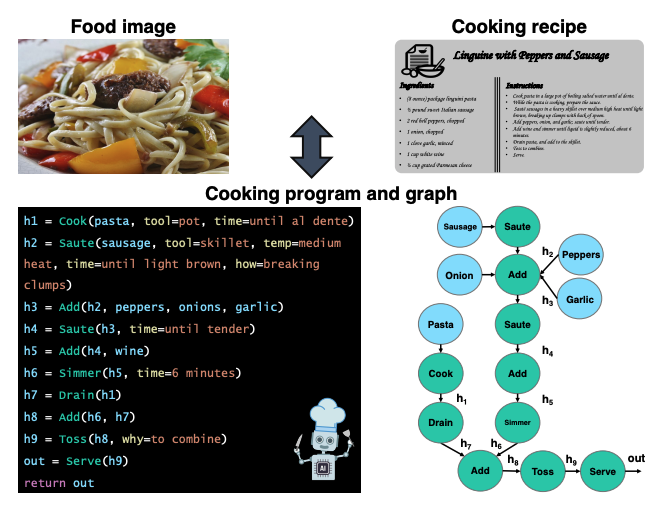
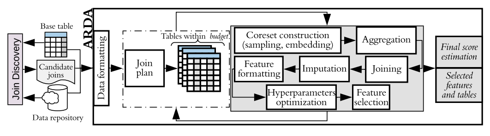

nadiiachepurko AT gmail
Hi! I am current Phd student at MIT in Computer Vision group advised by Antonio Torralba. Previously I was a part of Human-Computer Interraction group advised by David Karger where I completed my Masters Thesis. I have also frequently collaborated with David Woodruff from CMU on algorithms research.
Learning Program Representations for Food Images and Cooking Recipes.
Dim P. Papadopoulos, Enrique Mora, Nadiia Chepurko, Kuan Wei Huang, Ferda Ofli, Antonio Torralba
CVPR 2022. [pdf]

ARDA: Automatic Relational Data Augmentation for Machine Learning.
Nadiia Chepurko, Ryan Marcus, Emmanuel Zggragen, Raul Castro Fernandez, Tim Kraska, David Karger
VLDB 2020. [pdf]

Near-Optimal Algorithms for Linear Algebra in the Current Matrix Multiplication Time.
Nadiia Chepurko, Kenneth L. Clarkson, Praneeth Kacham, Lior Horesh, David Woodruff
SODA 2022. [pdf]
Quantum-Inspired Algorithms from Randomized Numerical Linear Algebra.
Nadiia Chepurko, Kenneth L. Clarkson, Lior Horesh, Honghao Lin, David Woodruff
ICML 2022. [pdf]
Robust and Sample Optimal Algorithms for PSD Low-Rank Approximation.
Ainesh Bakshi, Nadiia Chepurko, David Woodruff
FOCS 2020. [pdf]
Testing Positive Semi-Definiteness via Random Submatrices.
Ainesh Bakshi, Nadiia Chepurko, Rajesh Jayaram
FOCS 2020. [pdf]
Testing Positive Semi-Definiteness via Random Submatrices.
Ainesh Bakshi, Nadiia Chepurko, Rajesh Jayaram
FOCS 2020. [pdf]
Weighted Maximum Independent Set of Geometric Objects in Turnstile Streams.
Ainesh Bakshi, Nadiia Chepurko, David Woodruff
APPROX 2020. [pdf]